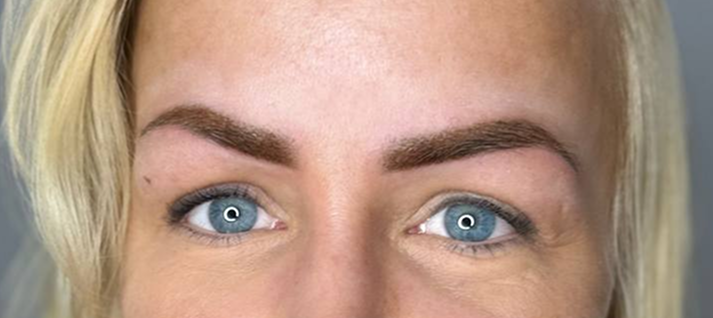

Bezpłatna konsultacja
Trzydzieści minut bez zobowiązań. Oglądam skórę i włoski, dobieram kolor do Twojej karnacji i rysuję projekt - a Ty decydujesz później.
Wszystko, co wykonuję w studiu przy Zwierzynieckiej - brwi trzema metodami, usta, kreska na oku, laminacja, usuwanie starego pigmentu i rekonstrukcja brwi przy alopecji. Poniżej krótko o każdym zabiegu i dla kogo się sprawdza, żebyś wiedziała, gdzie zajrzeć dalej.
Trzydzieści minut bez zobowiązań. Oglądam skórę i włoski, dobieram kolor do Twojej karnacji i rysuję projekt - a Ty decydujesz później.

Włos po włosie. Najbardziej naturalna technika - dla osób, którym zależy na efekcie własnych, gęstszych brwi. Najlepiej leży na skórze normalnej i suchej.

Miękkie cieniowanie przypominające delikatny makijaż cieniem. Sprawdza się przy każdej gęstości włosków i na większości typów skóry, także tłustej.

Przegląd wszystkich metod brwiowych razem z techniką łączoną - jeśli nie wiesz jeszcze, która będzie Twoja, zacznij od tej strony.

Wyrównany kontur i kolor dobrany pod karnację, w cielisto-różowych odcieniach. Dla ust bladych, lekko asymetrycznych albo tracących kontur.

Kreska zagęszczająca linię rzęs, klasyczna albo cieniowana. Spojrzenie wygląda na bardziej wypoczęte, bez codziennego rysowania eyelinerem.

Odtworzenie brwi przy częściowej lub całkowitej utracie włosków. Projektujemy kształt od podstaw, na podstawie proporcji twarzy.

Zabieg pielęgnacyjny na naturalnych włoskach - bez pigmentu i bez igieł. Uporządkowane brwi i uniesione rzęsy, bez okresu gojenia.

Stopniowe rozjaśnianie starego pigmentu removerem - kiedy permanent jest za ciemny, zmienił kolor albo trzeba przygotować miejsce pod nowy.
Każdą pigmentację uzupełniamy korektą po 4-8 tygodniach. To ona utrwala pigment i domyka kształt - bez niej efekt też będzie ładny, ale mniej równy i mniej trwały. Korekty wykonuję do wszystkich technik brwiowych oraz do kreski z cieniowaniem.
Ceny wszystkich zabiegów razem z czasem trwania zebrałam w jednym miejscu - zajrzyj do cennika makijażu permanentnego. Znajdziesz tam również koszt korekt oraz informację o znieczuleniu.
Nie musisz wybierać techniki samodzielnie. Na bezpłatnej konsultacji obejrzę skórę i włoski, dobiorę kolor do Twojej karnacji i pokażę projekt - a Ty zdecydujesz później, bez żadnych zobowiązań.
Jeśli wahasz się między metodami brwiowymi, pomoże Ci też artykuł którą metodę wybrać.
Konsultacja jest zawsze bezpłatna. Odpiszemy w ciągu 24 godzin - podaj preferowane daty, a dopasujemy termin do Twojego kalendarza.
Wolisz zadzwonić? Jesteśmy pod numerem +48 452 370 369, pon–pt 08–21, sob 08–18.
Makijaż permanentny, czyli mikropigmentacja, to sztuka podkreślania naturalnego piękna. Dbamy o to, aby efekt był subtelny i harmonijnie dopasowany do typu urody oraz indywidualnych cech kolorystycznych. Każdą klientkę traktujemy wyjątkowo - z wrażliwością, poczuciem estetyki i pełnym zaangażowaniem. Priorytetem jest dla nas bezpieczeństwo, dlatego korzystamy wyłącznie z certyfikowanych pigmentów i sterylnych narzędzi.
To technika tworzenia efektu pojedynczych włosków w brwi - pigment wprowadzany jest płytko, krótkimi, równoległymi kreskami, które naśladują rzeczywisty układ włosa. Efekt jest naturalny i szczególnie dobrze sprawdza się przy brwiach o przerzedzonej strukturze. Pełen efekt utrzymuje się od 12 do 24 miesięcy.
Pracujemy wyłącznie z certyfikowanymi pigmentami pochodzącymi od europejskich producentów. Każda partia ma dokumentację składu i datę ważności. Pigmenty są hipoalergiczne i przebadane dermatologicznie. Przed zabiegiem zawsze przeprowadzamy wywiad medyczny, a w razie wątpliwości - próbę uczuleniową.
Pigment jest stopniowo metabolizowany przez układ limfatyczny. Proces ten trwa od kilkunastu miesięcy do kilku lat - w zależności od głębokości aplikacji, koloru pigmentu, typu skóry i ekspozycji na słońce. Efekt nie znika nagle - blaknie równomiernie, bez przebarwień.
Przed zabiegiem stosujemy znieczulenie miejscowe (krem oraz roztwór po naruszeniu skóry). Większość klientek opisuje doznania jako lekkie szczypanie lub uczucie ciepła - porównywalne z depilacją. Komfort zabiegu to nasz priorytet - w każdej chwili możesz poprosić o przerwę.